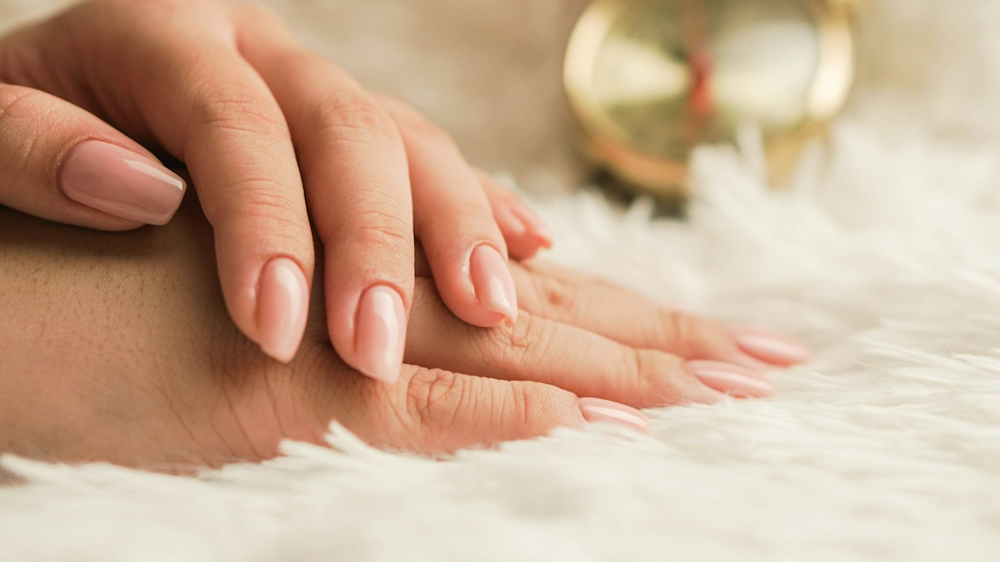
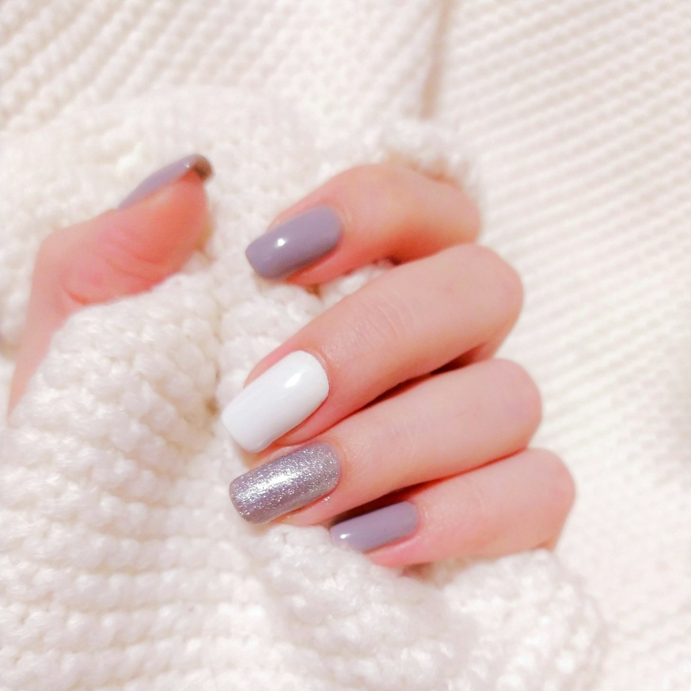

Pillar 01
Natural integrity
Gentle preparation that respects the natural nail plate. No aggressive drilling, no stripping the nail bare for a quick set.
Zero aggressive thinningBiological nail atelier • Royldene • Kimberley • Curated by Denise
A care-first studio in Kimberley that puts the health of your natural nails first — structured overlays and minimal designs that protect the nail, so it stays healthy and strong even after enhancements are removed.
Book an appointmentDiscover the method
5.0 ★ on Setmore • 3 verified client reviews • By appointment only
★★★★★ 5.0
Kimberley’s verified care-first rating on Setmore.
The studio manifesto
Denise is a professional nail technician who focuses on nail health, structured overlays and minimal nail designs. Her approach prioritises the integrity of the natural nail — so it remains healthy and strong even after enhancements are removed.
Pillar 01
Gentle preparation that respects the natural nail plate. No aggressive drilling, no stripping the nail bare for a quick set.
Zero aggressive thinningPillar 02
A builder overlay shaped to your natural nail arch, adding strength and flexibility where the nail needs it most.
Reinforced apex buildPillar 03
Understated Kalahari palettes, micro-French edges and negative space. Quiet, enduring beauty — never loud for the sake of it.
Editorial longevityClinical nail architecture
Denise’s signature restorative protocol replaces aggressive cosmetic shortcuts with careful, biological nail care.
01
Your natural nails are assessed first — condition, shape and past wear — before anything is applied.
02
Careful, non-aggressive prep and cuticle care. The living nail is protected, not ground down.
03
A custom overlay built to support your natural nail’s shape and flex, without heaviness.
04
A high-gloss seal and aftercare guidance, so the result lasts and the natural nail keeps improving.
Curated archive
A sample of the studio’s style. Every set is shaped around the client’s own natural nails.
Structured overlay
Deep tortoiseshell accents with a glossy black finish.
Confirm with Denise

Structured overlay
Translucent nude over a structured overlay — barely-there gloss.
Confirm with Denise

Minimal art
Muted grey, clean white and a single glitter accent.
Confirm with Denise

Natural nail care
Shaping and finishing at the atelier table, one client at a time.
Confirm with Denise
Sample imagery: the photographs on this site are sample images showing the studio’s style. They are not photographs of the studio’s own clients. Real work photographs will replace them once Denise supplies them.
5.0 • Setmore verified client reviews
Real feedback from clients treated by Denise at NALA HOLISTIC, documented verbatim through Setmore.
★★★★★
“I have done my nails there a couple of times now and I’m always satisfied with the end product. Booking times are always respected, the prices are affordable and you’ll get quality service too.”
Tshiamo
Structured overlay client
Verified Setmore appointment
★★★★★
“Excellent service.”
Lorato Oliphant
Setmore review
Verified Setmore appointment
★★★★★
“Denise is very good with her work, she takes time to perfect the nails and the final product is absolutely out of this world.”
Zandile
Minimal design client
Verified Setmore appointment
Private Royldene atelier
44a Nooitgedacht Street, Royldene, Kimberley, Northern Cape 8301, South Africa
A quiet residential sanctuary. By confirmed booking only.
| Monday – Friday | 09:00 – 18:00 |
|---|---|
| Saturday | 09:00 – 15:00 |
| Sunday | Closed |
Need guidance first? Message Denise on WhatsApp — she can advise on the right treatment before you book.